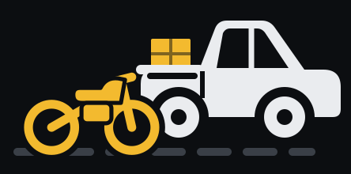

Cadernex Entregas · Goiânia, GOMotoboy e entregas em Goiânia
Peça um motoboy, um entregador de bike ou um frete em Goiânia pelo celular. O valor aparece na hora pelo CEP, você acompanha pelo GPS e paga por Pix.
Como funciona
- Coloque os CEPsDe onde buscar e de onde entregar. O app calcula a distância e mostra o valor antes de confirmar.
- Um entregador perto aceitaVocê vê o primeiro nome e a foto do veículo pra reconhecer na porta.
- Coleta e entrega com códigoO entregador só retira com o código de coleta e só conclui com o código de quem recebe.
- Acompanhe pelo GPS e pague por PixAviso a cada etapa. A parte do entregador cai direto no Pix do CPF dele.
Moto, bike ou frete
Documentos, comida, remédio, peças e encomendas pela cidade.
Pra entregas perto, até uns 5 km.
Picape pequena, picape média ou caminhão, com agendamento e ajudantes.
Bairros de Goiânia atendidos
O Cadernex funciona em qualquer bairro de Goiânia. A rapidez depende de quantos entregadores estão disponíveis perto de você.
- Setor Bueno
- Setor Oeste
- Setor Marista
- Jardim Goiás
- Setor Central
- Campinas
- Setor Sul
- Setor Universitário
- Vila Redenção
- Setor Pedro Ludovico
- Jardim América
- Parque Amazônia
- Setor Coimbra
- Nova Suíça
- e todos os outros
Para lojas de Goiânia
Lanchonetes, padarias, farmácias, açougues, ferragistas e outras lojas vendem pelo Cadernex Loja: cardápio com fotos, link próprio pra divulgar, pedido já pago no Pix da loja e motoboy automático quando o pedido fica pronto. Sem mensalidade.
Para entregadores de Goiânia
Tem moto ou bike? Com o Cadernex Entregador você fica disponível quando quiser, aceita corridas perto de você e recebe no Pix do seu CPF. Dá pra encaixar entre a faculdade e o trabalho.
Perguntas frequentes
Quanto custa um motoboy em Goiânia pelo Cadernex?
Até 3 km, a corrida custa R$ 8. Acima de 3 km, soma R$ 1,40 por km rodado. Uma corrida de 5 km, por exemplo, fica em R$ 10,80. Quem pede paga também 14% de taxa de serviço e R$ 2,99 de taxa do app. O valor aparece antes de confirmar.
Como peço uma entrega em Goiânia?
Abra cadernex.com.br, toque em Pedir entrega e coloque o CEP de onde buscar e de onde entregar. O app calcula a distância e o valor na hora, um entregador perto aceita e você acompanha pelo GPS. Paga por Pix pelo app.
O Cadernex atende quais bairros de Goiânia?
Funciona em qualquer bairro de Goiânia, como Setor Bueno, Setor Oeste, Setor Marista, Jardim Goiás, Setor Central, Campinas e Vila Redenção, e também em qualquer cidade do Brasil. A rapidez depende de quantos entregadores estão disponíveis perto de você.
Tem entrega de bicicleta e frete em Goiânia?
Sim. Além da moto, tem entregador de bike para lugares perto e frete com picape pequena, picape média ou caminhão, com agendamento e ajudantes.
Tenho uma loja em Goiânia. Como uso o Cadernex?
Baixe o Cadernex Loja, monte o cardápio com fotos e divulgue o link da sua loja. O cliente paga por Pix, o dinheiro cai na hora no Pix da loja e, quando o pedido fica pronto, o Cadernex chama o motoboy. Sem mensalidade.
Como ser entregador em Goiânia?
Baixe o Cadernex Entregador, crie a conta com CPF e foto do veículo e toque em Ficar disponível. A sua parte cai no Pix do seu CPF. Entregas de moto exigem 21 anos ou mais (Lei 12.009/2009).
Veja também: Frete em Goiânia · Delivery em Goiânia · Seja entregador em Goiânia
Cadernex Labs · CNPJ 70.019.938/0001-39 · Goiânia, GO · suporte@cadernex.com.br